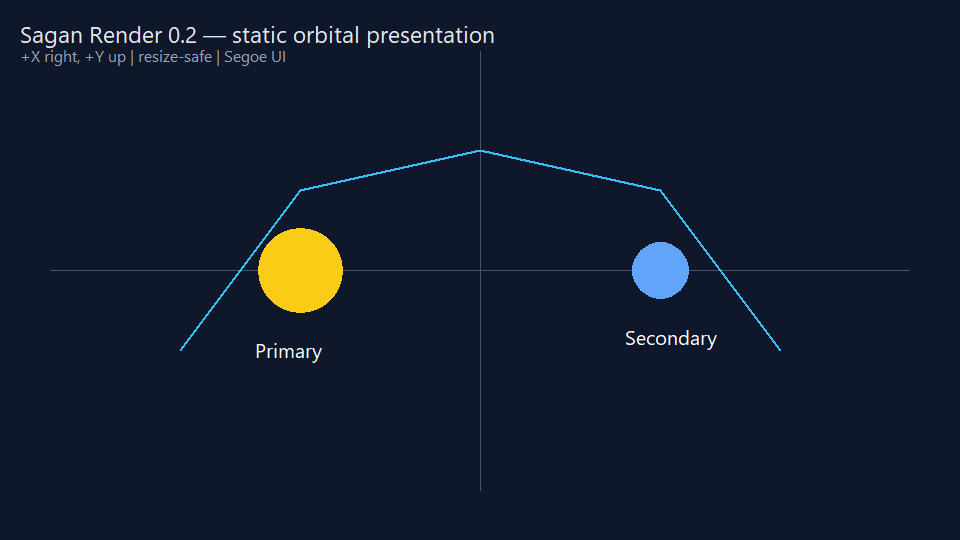
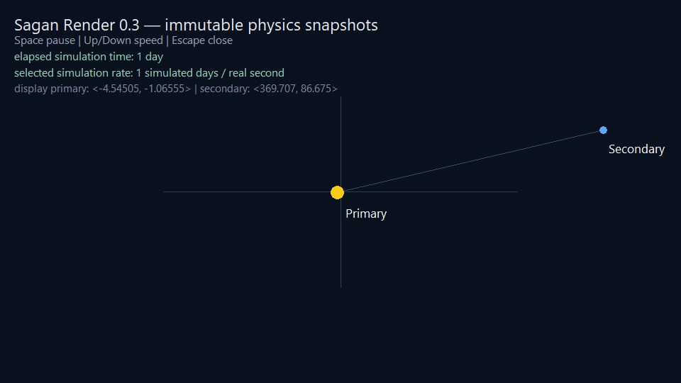
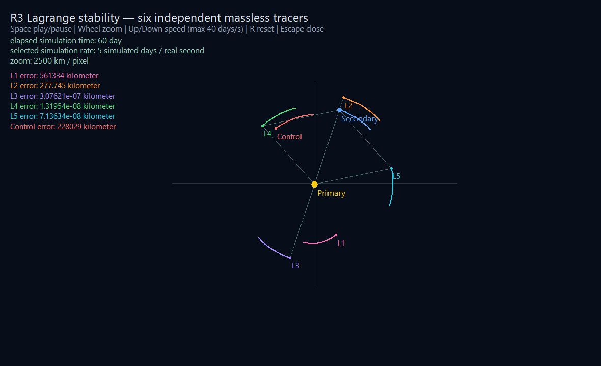

Experimental documentation — Work in progress
This page has not completed the documentation audit. Current documentation version: experimental.
Rendering library
Work-in-progress library
Version 0.5.1 implements the R0 single-window bridge, R1 basic 2D canvas, R2 snapshot animation support, and the keyboard and wheel input used by R3 on Windows. It is not a general scene or UI system, and its public API may change before 1.0.
Rendering is intended to be a first-party Sagan core library integrated with the language's mathematical and simulation vocabulary. It will require an explicit import so non-graphical programs do not incur rendering dependencies or runtime costs.
Intended role
The library will eventually provide the supported path from Sagan simulation data to visual output. Its public abstractions must be designed together with real examples rather than inferred from the current compiler, AST visualization features, or any particular graphics ecosystem.
The compiler's existing DOT, SVG, and interactive HTML AST renderers are developer tools. They are not implementations or previews of the future Sagan rendering library.
Window and frame lifecycle
The independently versioned sagan-render package exports open, poll,
clear, close, elapsed_seconds, key_pressed, and scroll_y from
render.window. It
owns one resizable native window per process. Native handles remain private.
The current private backend uses the Windows API; this is not part of the
Sagan-facing contract and may be replaced by SDL3 without changing callers.
open validates positive dimensions and reports native setup failures through
the existing runtime-failure path. poll processes pending window events and
becomes false after a close request. close releases the window, back buffer,
and registration resources and is safe to call after the user closes the
window.
elapsed_seconds() reports monotonic wall time since open. key_pressed
consumes one press of space, up, down, or r; Escape requests a clean close
directly. scroll_y consumes accumulated vertical mouse-wheel movement, with
positive values for upward scrolling and negative values for downward scrolling.
These small primitives let an application schedule fixed simulation
steps independently of display frames. They do not make the renderer the owner
of simulation time or mutable physics state.
clear starts a frame by filling a resize-aware private back buffer. Drawing
operations modify that frame, and present copies it to the window. Callers
redraw every display frame; the renderer preserves the most recently presented
frame for native paint events.
Basic 2D canvas
The render.canvas module exports:
set_view(center_x, center_y, pixels_per_unit)for a centered orthographic world-to-screen transform;is_visible(x, y, radius)for a deterministic test of whether the same world-space circle would intersect the current drawable client viewport;circle(x, y, radius, red, green, blue)for filled world-space circles;line(start_x, start_y, end_x, end_y, width, red, green, blue)for world-space line segments;text(x, y, value, point_size, red, green, blue)for world-positioned text;text_screen(x, y, value, point_size, red, green, blue)for fixed overlays; andpresent()to display the completed frame.
World coordinates use +X right and +Y up. The view center maps to the current
client-area center, so resizing keeps the world origin centered. Circle radii
scale with pixels_per_unit; line widths and screen text positions are physical
pixels. Colors are integer RGB channels from 0 through 255. Coordinates, scale,
radii, widths, point sizes, and colors are checked before drawing. Version 0.4
does not yet expose alpha, clipping, rotation, font selection, paths as one
object, or retained drawables.
Text uses the Windows system Segoe UI font with ClearType quality. Point sizes
use the drawing device's current DPI. No font file is distributed at R1; a
portable backend must establish an equivalent font-loading contract.
Demos and verification
From a source checkout with the documented MSYS2 UCRT64 toolchain, run:
make window-demo
make shape-text-demo
make two-body-demo
make lagrange-demo
make solar-lagrange-demo
Each of the three simulation demo targets rebuilds its executable and then launches it. The executable remains in its demo build directory after the window closes. Building and running can also be requested independently:
make two-body-demo-build
make two-body-demo-run
make lagrange-demo-build
make lagrange-demo-run
make solar-lagrange-demo-build
make solar-lagrange-demo-run
The stable outputs are build/two-body-demo/two-body-demo.exe,
build/lagrange-demo/lagrange-demo.exe, and
build/solar-lagrange-demo/solar-lagrange-demo.exe. A run-only target reports
the missing executable and exits instead of rebuilding it implicitly.
For the animated project, make two-body-demo now invokes the normal compiler
path. You can run that same manifest-backed project directly:
Its sagan.toml declares [application] mode = "windowed". On Windows, with
Sagan's file association installed, double-click
examples/two_body_demo/src/main.sagan to launch it without a terminal.
The installed release and portable ZIP also include this example under
examples/two_body_demo; run that copy with sagan --run-package or launch its
entry file from Explorer. An unconfigured or non-rendering Sagan program keeps
the ordinary console behavior.
The command compiles the Sagan package and its private native bridge, then opens
a resizable 960 by 540 solid blue-gray window. Close it with the standard
window close button. make window-demo-test uses the private
SAGAN_RENDER_AUTOCLOSE_MS smoke-test setting to exercise the same lifecycle
without waiting for input. make shape-text-demo opens the R1 static
presentation with two bodies, axes, line segments, world labels, and a screen
legend. make shape-text-demo-test captures and validates the same frame as a
960 by 540 top-down BMP. make two-body-demo consumes immutable snapshots from
sagan-physics 0.3.0 and animates the real two-body solution. Space pauses,
Up/Down change playback speed up to 40 simulated days per real second, and
Escape or the close button exits cleanly. Forty days per second is the highest
rate these demos currently sustain without visible lag.
The demo caps a single real-time frame contribution at 0.25 seconds to avoid a
large simulation catch-up after a debugger stop or window stall.


make two-body-demo-test runs the same executable under two deterministic
display schedules: 100 frames at 20 milliseconds and 20 frames at 100
milliseconds. Both represent two real seconds and must produce the identical
fixed-step snapshot at simulation time 172800 seconds. The test also captures
and validates the displayed 960 by 540 frame. The deterministic timing controls
are private test environment settings, not public Sagan APIs.
The window shows elapsed simulation time in days and the selected playback
rate in simulated days per real second. The rate remains selected while paused;
no simulation time advances until playback resumes.
make lagrange-demo reuses the same renderer and frame scheduler for
sagan-physics 0.3.0's restricted-three-body snapshots. It displays the two
massive primaries, L1 through L5, and an off-point control as eight distinctly
colored bodies. Every body has an eight-sample matching-color trail recorded
at six-hour simulation intervals, and each tracer has a matching numeric
rotating-frame error.
When a tertiary's five-pixel marker no longer intersects the actual client
viewport, its error readout appends a single Unicode arrow. ← means its
barycenter-relative distance is decreasing; → means that distance is
increasing. The demos use is_visible after applying the active view, so a
partially visible marker remains on-screen and receives no arrow. The indicator
uses relative radial motion, so the solar demo does not confuse the Earth-Moon
group's heliocentric motion with a tertiary moving toward or away from the
local view.
An escaped tertiary is also checked against the widest 20,000-kilometer-per- pixel view. Once its marker no longer intersects even that viewport, the demo calls the physics solver's explicit stop operation and that tertiary is no longer integrated. Escape detection itself remains a physics decision; the renderer only supplies the deterministic presentation boundary.
The demo opens paused at five simulated days per real second. Space toggles
playback, Up/Down change the rate up to 40 simulated days per real second, and
the mouse wheel changes the orthographic
scale from 250 through 20,000 kilometers per pixel. The overlay shows elapsed
days, the selected simulation rate, and the current scale. Error readouts use
an explicit conversion to kilometers, so unit-bearing output says kilometer
instead of a misleading meter / kilometer ratio. R restores the physical initial state,
pauses, and clears the trails without changing the selected rate. The representative 60-day
snapshot visibly distinguishes the small L4/L5 errors from the unstable L1
and off-point control without claiming that every Lagrange point is stable.

make lagrange-demo-test runs 600 frames at 20 milliseconds and 120 frames at
100 milliseconds. Both schedules must produce the same 60-day physics result.
It also verifies that reset preserves a doubled playback rate and validates the
captured 1180 by 720 frame. Trail sampling is a presentation concern and does
not feed state back into the physics solver.
make solar-lagrange-demo keeps the same Earth-Moon-centered Lagrange view,
colors, trails, rotating polygonal Lagrange guide, controls, and error
presentation while adding the Sun as a third mutually gravitating massive
body. The guide is reconstructed from the current perturbed Earth-Moon axis,
so it remains the live ideal reference rather than a fixed screen decoration.
All six massless tracers feel the Sun, Earth, and Moon. A gold direction marker
keeps the off-screen Sun legible, and a heliocentric inset shows the Earth-Moon
group orbiting the Sun without shrinking the local Lagrange geometry to a
pixel. Its overlay also separates elapsed simulation days from the selected
simulated-days-per-real-second rate and displays tracer errors in kilometers.
Like the restricted-three-body window, it opens paused; press Space to start
or pause the simulation.
The deterministic solar window fixture advances 600 20-millisecond frames to the same 60-day state as the headless fixture and captures the rendered frame. At that point the model reports approximately 39,844 km of L4 error and 48,369 km of L5 error. These values demonstrate the difference from the ideal circular restricted-three-body model; the planar circular setup is not an ephemeris-accuracy claim. Run the check with:
Version 0.5.1 supports Windows only and links the system user32 and gdi32
libraries. The compiler locates the private native bridge from the resolved,
locked sagan-render package; a missing installed bridge or package index
produces a build error identifying the missing input. The demo statically links
its GCC/C++
runtime support, so the resulting executable does not require MSYS2 runtime
directories on PATH. It has no SDL or GPU dependency yet.
Text uses Windows' Segoe UI system font; no separate font file is bundled.
The installed first-party catalog declares compiler compatibility ^4.0.0 for
the current development language. This range is catalog metadata; the renderer
retains its independent package version, 0.5.1.
Relationship to math and physics
Rendering will use the automatically available math foundation. It should be able to visualize data produced by physics, but physics remains a separate, explicitly imported core library. Concrete dependency direction, shared scene or geometry types, coordinate conventions, and runtime integration remain open.
Documentation required before release
The completed section must define supported platforms and backends, imports, package organization, public APIs, coordinate and color conventions, resource ownership, frame lifecycle, error behavior, performance expectations, headless operation, examples, and interoperability with math and physics.
See the standard-library status for the current decision boundary.